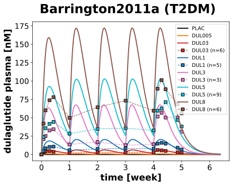
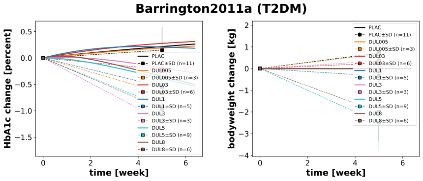

|  |
|  |
../../../experiments/studies/barrington2011a.py
from typing import Dict
from sbmlsim.data import DataSet, load_pkdb_dataframe
from sbmlsim.fit import FitMapping, FitData
from sbmlutils.console import console
from pkdb_models.models.dulaglutide.experiments.base_experiment import (
DulaglutideSimulationExperiment,
)
from pkdb_models.models.dulaglutide.experiments.metadata import (
Tissue, Route, Dosing, ApplicationForm, Health,
Fasting, DulaglutideMappingMetaData, Coadministration
)
from sbmlsim.plot import Axis, Figure
from sbmlsim.simulation import Timecourse, TimecourseSim
from pkdb_models.models.dulaglutide.helpers import run_experiments
from sbmlsim.plot import Figure
Figure.legend_position: str = "outside"
class Barrington2011a(DulaglutideSimulationExperiment):
"""Simulation experiment of Barrington2011a."""
bodyweights = { # kg
"PLAC": 83.20,
"DUL005": 81.40,
"DUL03": 85.7,
"DUL1": 89.5,
"DUL3": 67,
"DUL5": 88.6,
"DUL8": 76.8
}
interventions = list(bodyweights.keys())
hba1cs = { # percent
"PLAC": 7.40,
"DUL005": 8.10,
"DUL03": 8.20,
"DUL1": 8.4,
"DUL3": 7.0,
"DUL5": 7.4,
"DUL8": 7.3
}
fpgs = { # mg/dl
"PLAC": 158.40,
"DUL005": 170.70,
"DUL03": 185.50,
"DUL1": 200.40,
"DUL3": 145.20,
"DUL5": 142.50,
"DUL8": 177.30
}
doses = {
"PLAC" : 0, #mg
"DUL005": 0.05, #mg
"DUL03" : 0.3, #mg
"DUL1" : 1, #mg
"DUL3" : 3, #mg
"DUL5" : 5, #mg
"DUL8" : 8 #mg
}
colors = {
"PLAC" : "black",
"DUL005": "tab:orange",
"DUL03" : "tab:red",
"DUL1" : "tab:blue",
"DUL3" : "tab:pink",
"DUL5" : "tab:cyan",
"DUL8" : "tab:brown"
}
info_pk = {
# sid: name
"[Cve_dul]": "dulaglutide", # Fig1
}
info_pd = {
# sid: name
"hba1c_change": "hba1c_change", # Fig3
"BW_change": "bodyweight_change", # Fig3
}
def datasets(self) -> Dict[str, DataSet]:
dsets = {}
for fig_id in ["Fig1", "Fig3"]:
df = load_pkdb_dataframe(f"{self.sid}_{fig_id}", data_path=self.data_path)
for label, df_label in df.groupby("label"):
dset = DataSet.from_df(df_label, self.ureg)
# unit conversion
if label.startswith("dulaglutide_"):
dset.unit_conversion("mean", 1 / self.Mr.dul)
dsets[label] = dset
# console.print(dsets)
# console.print(dsets.keys())
return dsets
def simulations(self) -> Dict[str, TimecourseSim]:
Q_ = self.Q_
tcsims = {}
for intervention in self.interventions:
tc0 = Timecourse(
start=0,
end=168*60, # [min]
steps = 1000,
changes = {
**self.default_changes(),
# physiological changes
"BW0": Q_(self.bodyweights[intervention], "kg"),
"hba1c0": Q_(self.hba1cs[intervention], "percent"),
"hba1c": Q_(self.hba1cs[intervention], "percent"),
"fpg0": Q_(self.fpgs[intervention], "mg/dl")/self.Mr.glc,
"[fpg]": Q_(self.fpgs[intervention], "mg/dl")/self.Mr.glc,
# dose
"SCDOSE_dul": Q_(self.doses[intervention], "mg")
},
)
tc1 = Timecourse(
start = 0,
end = 168*60, #[min]
steps = 1000,
changes = {
"SCDOSE_dul": Q_(self.doses[intervention], "mg")
},
)
tc2 = Timecourse(
start = 0,
end = 400*60, #[min]
steps = 1000,
changes = {
"SCDOSE_dul": Q_(self.doses[intervention], "mg")
},
)
tcsims[f"dul_{intervention}"] = TimecourseSim(
[tc0] + [tc1 for _ in range(3)] + [tc2]
)
# console.print(tcsims.keys())
return tcsims
def fit_mappings(self) -> Dict[str, FitMapping]:
mappings = {}
# pharmacokinetics
for intervention in self.interventions:
if intervention in {"PLAC", "DUL005"}:
continue
for sid, name in self.info_pk.items():
mappings[f"fm_dul_{name}_{intervention}"] = FitMapping(
self,
reference = FitData(
self,
dataset=f"{name}_{intervention}",
xid="time",
yid="mean",
yid_sd=None,
count="count",
),
observable = FitData(
self, task = f"task_dul_{intervention}", xid = "time", yid = sid,
),
metadata = DulaglutideMappingMetaData(
tissue = Tissue.PLASMA,
route = Route.SC,
application_form = ApplicationForm.SOLUTION,
dosing = Dosing.MULTIPLE,
health = Health.T2DM,
fasting = Fasting.NR,
coadministration = Coadministration.ANTIHYPERGLYCEMIC_MEDICATION
)
)
# pharmacodynamics
for intervention in self.interventions:
for sid, name in self.info_pd.items():
mappings[f"fm_dul_{name}_{intervention}"] = FitMapping(
self,
reference=FitData(
self,
dataset=f"{name}_{intervention}",
xid="time",
yid="mean",
yid_sd="mean_sd",
count="count",
),
observable=FitData(
self, task=f"task_dul_{intervention}", xid="time", yid=sid,
),
metadata=DulaglutideMappingMetaData(
tissue=Tissue.PLASMA,
route=Route.SC,
application_form=ApplicationForm.SOLUTION,
dosing=Dosing.MULTIPLE,
health=Health.T2DM,
fasting=Fasting.NR,
coadministration=Coadministration.NONE
)
)
return mappings
def figures(self) -> Dict[str, Figure]:
# pharmacokinetics
fig_pk = Figure(
experiment=self,
sid="Fig1_pk",
name=f"{self.__class__.__name__} (T2DM)",
)
plots = fig_pk.create_plots(xaxis=Axis(self.label_time, unit=self.unit_time), legend=True)
plots[0].set_yaxis(self.label_dul, unit=self.unit_dul)
for intervention in self.interventions:
for sid, name in self.info_pk.items():
# simulation
plots[0].add_data(
task=f"task_dul_{intervention}",
xid="time",
yid=f"[Cve_dul]",
label=intervention,
color=self.colors[intervention],
)
if intervention in {"PLAC", "DUL005"}:
continue
# data
plots[0].add_data(
dataset=f"dulaglutide_{intervention}",
xid="time",
yid="mean",
yid_sd=None if name == "dulaglutide" else "mean_sd",
count="count",
label=intervention,
color=self.colors[intervention],
)
# pharmacodynamics
fig_pd = Figure(
experiment=self,
sid="Fig3_pd",
num_cols=2,
name=f"{self.__class__.__name__} (T2DM)",
)
plots = fig_pd.create_plots(xaxis=Axis(self.label_time, unit=self.unit_time), legend=True)
plots[0].set_yaxis(self.label_hba1c_change, unit=self.unit_hba1c)
plots[1].set_yaxis(self.label_bodyweight_change, unit=self.unit_bodyweight)
for intervention in self.interventions:
for kp, sid in enumerate(self.info_pd):
name = self.info_pd[sid]
# simulation
plots[kp].add_data(
task=f"task_dul_{intervention}",
xid="time",
yid=sid,
label=intervention,
color=self.colors[intervention],
)
# data
plots[kp].add_data(
dataset=f"{name}_{intervention}",
xid="time",
yid="mean",
yid_sd="mean_sd",
count="count",
label=intervention,
color=self.colors[intervention],
)
return {
fig_pk.sid: fig_pk,
fig_pd.sid: fig_pd,
}
if __name__ == "__main__":
run_experiments(Barrington2011a, output_dir=Barrington2011a.__name__)
{kind=link}
{kind=link}